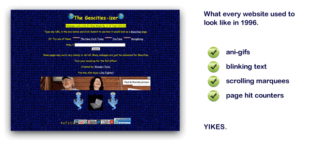

Reading recap
Web Standards & Semantics
Basic tags, block vs. inline
Validating code, valid HTML doc structure
Debug inspector, Firebug
Most common tags
Deprecated (unsupported) tags
Summary:
"Web design is the creation of digital environments that facilitate and encourage human activity; reflect or adapt to individual voices and content; and change gracefully over time while always retaining their identity."
"Where are the masterpieces of web design, these critics cry. That Google Maps might be as representative of our age as the Mona Lisa was of Leonardo's - and as brilliant, in its way - satisfies many of us as an answer, but might not satisfy the design critic in search of a direct parallel to, oh, I don't know, let's say Milton Glaser's iconic Bob Dylan poster."
Summary:
THIS MESSAGE HAS NOT CHANGED: "Please for the love of god upgrade your browser." -me
Re: staying employed: "Learning to work with emerging technologies is probably a much better plan." - Zeldman
style { display: block; display: inline; }
<p>, <div>, <h1>, <br>
vs.
<span>, <em>
Block elements take up the full page width and start on a new line.
Inline elements wrap text for the purpose of applying more semantic markup or CSS targeting.
A great place to start learning:
http://www.w3schools.com/html/html_elements.asp
Every browser has some form of debugger.
Firefox has an extension called Firebug.
Chrome & Safari have one built in.
<blink>, <marquee>, <font>, <center>, and more.
Deprecated tags are have either been removed from the spec or will be removed in some future version. Do not use them because future browsers may not support them.

{kind=link}